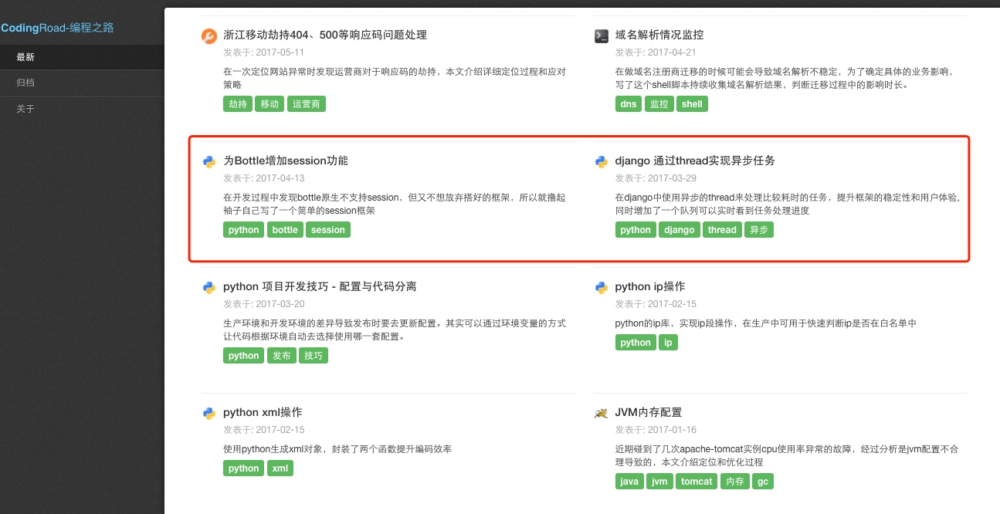

django template循环显示内容
需求
如下图标红框的区块所示，我在blog的文章列表页，每行要显示2个文章。
如果是在程序里面大家都知道用mod去控制循环就好了，但是在template里面确不支持mod方法，那应该怎样实现呢？

方法
利用template自己的变量forloop可以实现我们期望的效果，具体方法如下：
在view层准备好con_post_list 文章列表，然后在template中用如下方法实现：
{% if con_post_list %}
{% for conpost in con_post_list %}
{% if forloop.counter0|divisibleby:2 %}<div class="row">{% endif %}
<div class="col-xs-12 col-md-6">
<div class="media">
<hr>
<div class="media-left">
<a href="#">
<img class="media-object" src="" width=25>
</a>
</div>
<div class="media-body">
<h4 class="media-heading">{{ conpost.title }}</h4>
<p>发表于: {{ conpost.publishdate }}</p>
<p>{{ conpost.description }}</p>
</div>
</div>
<br>
</div>
{% if forloop.counter|divisibleby:2 %}</div>{% endif %}
{% endfor %}
{% endif %}
最核心的部分如下
{% if forloop.counter0|divisibleby:2 %}<div class="row">{% endif %}
{% if forloop.counter|divisibleby:2 %}</div>{% endif %}
这个表示在循环中，每循环两次则展示if里面的内容，使用这个特性刚好实现我们的需求。
More
forloop是用来做循环控制的，常用的变量有
- forloop.counter0 获取当前迭代值，从0开始计数
- forloop.counter 获取当前迭代值，从1开始计数
- forloop.first 是否第1次进入循环
- forloop.last 是否最后1次进入循环
可以在template中直接使用，如
{% for conpost in con_post_list %}
{% if forloop.first %}
<h1>start-开始循环</h1>
{% endif %}
<h2>{{ forloop.counter }} - {{ conpost.title }}</h2>
{% if forloop.last %}
<h1>end</h1>
{% endif %}
{% endfor %}